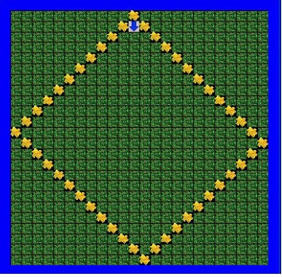
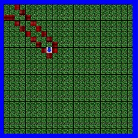
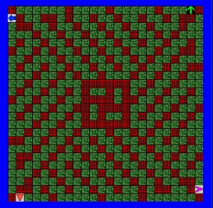
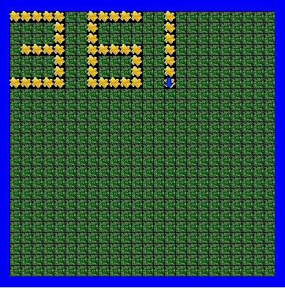
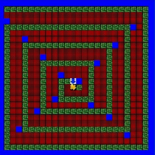
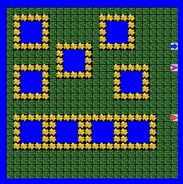
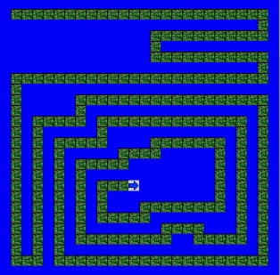
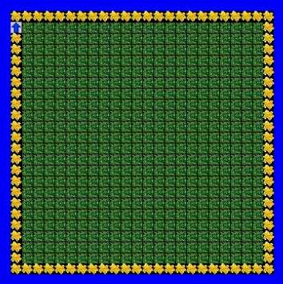

Jeroo Page
Jeroo content here
Unit 1
 Description:
This was an intro into Jeroo, where we learnt the basic commands and how to problem solve simple questions.Concepts Learned
- basic Jeroo commands (hop, turn left/right)
- Jeroo commands with flowers (pick/toss flowers)
- Used loops ( to make continuous movements ex. plant, hop, plant, hop....)
- eliminate nets by tossing flowers
Unit 2
 Description:
We learnt in further detail how to use Jeroo and more concise ways to solve problems.Concepts Learned
- how to make new/multiple Jeroos
- Give Jeroos location/flowers/direction for the start
- made methods to replace using copy paste (long) codes
Unit 3
 Description:
We went further with loops and used conditional statements to use even less code to do more.Concepts Learned
- while loops(continuous loop if a statement is true)
- conditional statements (ex. if jeroo.isClear)
- locations (AHEAD) (RIGHT) (LEFT) (HERE)
- nested loops (loops within loops)
Unit 4
 Description:
We learnt in further detail how to use Jeroo and more concise ways to solve problems.Concepts Learned
- if/else loops
- boolean (variable/condition determined to be true or false)
- if statements with boolean statements
- if statements with 1 and 2 conditions
- if/while statements with multiple conditions using &&
- nesting if loops
- recusion